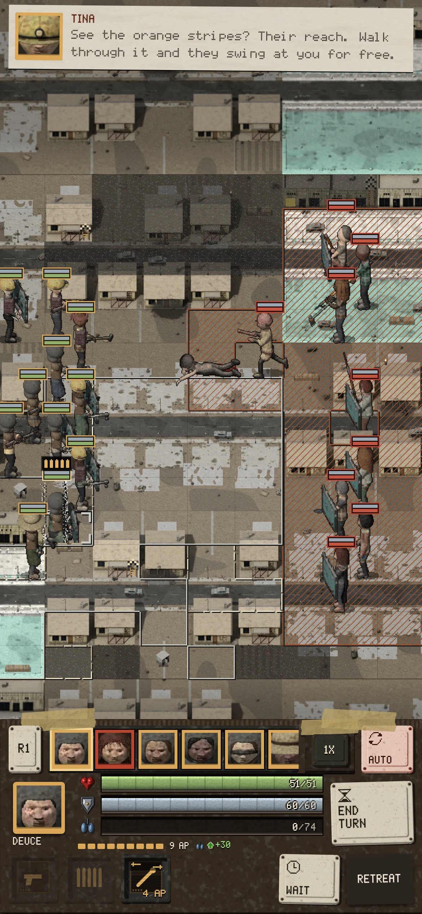

One of yours is struck down and lives. He falls on his back, lies there two bars, then rolls over and drags himself away from the man who dropped him, toward his own side. First the drag: legs dead, the right arm pulls, the left arm reaches ahead and never gets a grip. Then on his elbows, low and slow, his head down. Then the last: one weak reach, a few inches, a stop, and the hand opens. He stays there.

In the game it happens by itself: any man of yours struck down who lives does it, crawling away from whoever dropped him. The dark mark behind him is where he dragged himself, never fresh blood. This is the first one, on one man; when you pass it, the same recipe makes it for every body.